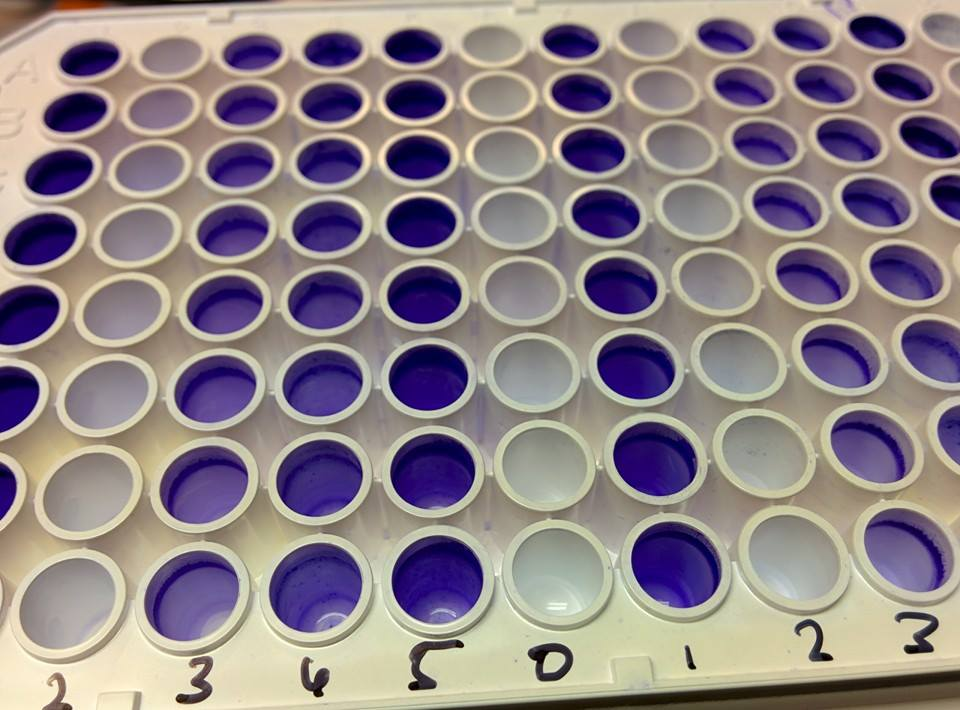
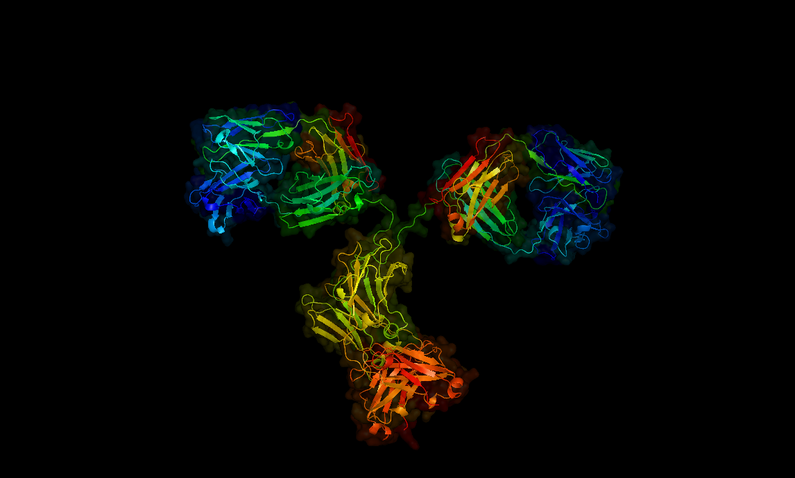

Biofilm Enhancement
We have devised a method to introduce a DNA sequence which encodes an RNA aptamer (i.e. - an oligonucleotide sequence which binds to a specific molecule) into a non-pathogenic E. coli strain. The project has also inspired our collaboration with the Rathneau Institute and SYNENERGENE as we look at the feasibility of developing ribosponge into a product, and examine the regulatory, legal, and ethical challenges of packing it into a bacteriophage.

Synthetic Antibodies
The goal of this project is to engineer proteins for the detection of membrane bound cancer biomarkers. These detection proteins, or synthetic antibodies, will be cheap, easy to produce, and modular.

We have devised a method to introduce a DNA sequence which encodes an RNA aptamer (i.e. - an oligonucleotide sequence which binds to a specific molecule) into a non-pathogenic E. coli strain. We have dubbed this RNA aptamer a “ribosponge” due to its unique mode of action. The ribosponge binds cyclic di-GMP, a secondary intracellular messenger which signals bacteria to enter a persistent or biofilm state. The signal is universal among many species such as E. coli, P. aeruginosa, and M. tuberculosis. Blocking the signal of c-di-GMP by binding it with an aptamer could prevent the persistent state in these and other pathogens. The project has also inspired our collaboration with the Rathneau Institute and SYNENERGENE as we look at the feasibility of developing ribosponge into a product, and examine the regulatory, legal, and ethical challenges of packing it into a bacteriophage.
The goal of this project is to create an alternative detection molecule, a synthetic antibody, which can be produced more quickly, at a lower cost, using much simpler and more accessible methods. The product of our research will be a plasmid, a synthetic DNA molecule, that will cause bacteria to express our synthetic antibodies. The plasmid will allow researchers to “plug-and-play” different detection regions onto the constant region of an antibody. We will also validate this approach by demonstrating the efficacy of our synthetic antibodies in a proof-of-concept experiment, in which our synthetic antibody will be used to detect proteins on the surface of a cell.
The creation of synthetic antibodies in bacteria will allow researchers to circumvent the expensive, time consuming, and arduous process of monoclonal antibody production. The highly modular “plug-and-play” aspect of our template plasmid will make this tool simple to use and highly versatile, while the use of the constant region of a monoclonal antibody as the detection method will make this technology particularly powerful, as there already exists a large amount of chemistry, and protocols associated with different uses of the conserved domain. Thus, synthetic antibodies will provide yet another versatile tool for creating detection assays, diagnostics, and potentially even therapeutics for diseases such as cancers and autoimmune diseases.